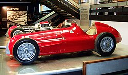
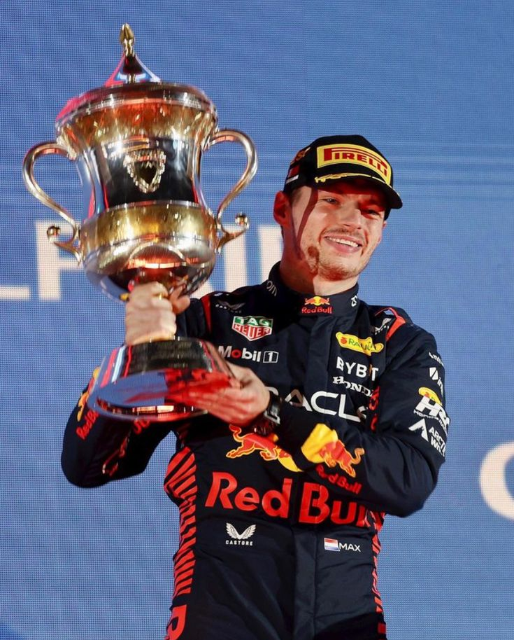
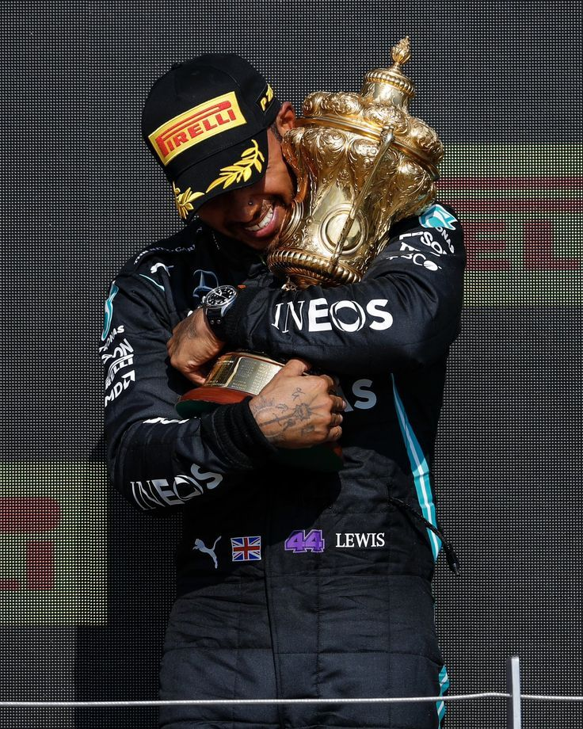

A Fórmula 1 foi criada como um Campeonato Mundial em 1950, com a primeira corrida realizada no Circuito de Silverstone, uma antiga base da Força Aérea Real, no Reino Unido, em 13 de maio daquele ano. Mais seis eventos foram realizados em uma temporada que viu o piloto da Alfa Romeo, Giuseppe Farina, se tornar o primeiro campeão mundial do esporte superando seus companheiros de equipe Juan Manuel Fangio e Luigi Fagioli.
Em 1958, a Cooper apresenta um pequeno carro (baseado nos modelos da Fórmula 3 de 500cc) com motor de fabricação própria, montado na parte traseira, com um acentuado índice de avanço técnico comparado aos carros da época. Este carro marcou os modelos da década que se iniciava já sendo campeão de construtores e de pilotos, com o australiano Jack Brabham, em 1959 e 1960.
As cores tradicionais dos carros no início da Fórmula 1 eram: o verde para as equipes inglesas, o vermelho para as italianas, o azul para as francesas, o prateado alemão e o branco japonês. Nessa época, a F-1 era essencialmente um esporte, e o mercantilismo ainda não tinha tomado conta. As equipes eram mantidas com ajuda das empresas de petróleo e fabricantes de pneus. Essa obrigação durou até 1968.
No ano de 1958, pela primeira vez a Fórmula 1 teve uma mulher piloto alinhando no grid. Foi a italiana Maria Teresa Filippis. Ela tentou se classificar para 5 grandes prêmios, quatro deles pela equipe Maserati e um pela Porsche. Classificou-se para três deles. Sua melhor atuação foi em sua segunda corrida, na Bélgica em 1958, quando largou na 15ª colocação e terminou na 10ª.



